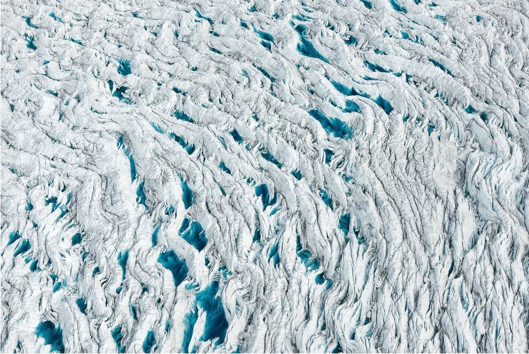

Bosques del Amazonas despues de un incendio provocado Bosques del Amazonas despues de un incendio provocado |
 Plantaciones de Aceite de Palma, Indonesia Plantaciones de Aceite de Palma, Indonesia |
 Arboles quemados para la produccion agricola, el Congo Arboles quemados para la produccion agricola, el Congo |
 Arbol de Castaña protegido yace caido, Brasil Arbol de Castaña protegido yace caido, Brasil |
 Arbol rodeado por sus propias flores moradas, Brasil Arbol rodeado por sus propias flores moradas, Brasil |
 Comienzos del Proyecto de la presa Belo Monte, Brasil Comienzos del Proyecto de la presa Belo Monte, Brasil |
 Incendio provocado para la producción agrícola, Brasil Incendio provocado para la producción agrícola, Brasil |
 Incendio provocado para la produccion agrícola, Brasil Incendio provocado para la produccion agrícola, Brasil |
 Iceberg revela su verdadero tamaño bajo el agua Iceberg revela su verdadero tamaño bajo el agua |
 Oso Polar sobre hielo marino en el Océano Ártico Oso Polar sobre hielo marino en el Océano Ártico |
 Pelicanos, esperando ser limpiados de petroleo Pelicanos, esperando ser limpiados de petroleo |
 Barcos cerca de la boca del Pozo Deepwater Horizon Barcos cerca de la boca del Pozo Deepwater Horizon |
| Charcos de agua dentro de grietas de hielo, Groenlandia |
 Charcos de agua del deshielo, Groenlandia Charcos de agua del deshielo, Groenlandia |
 Cerca electrica alcanzada por 9 misiles rusos, Ucrania Cerca electrica alcanzada por 9 misiles rusos, Ucrania |
 Torre de negocios afectada por la invasion rusa, Ucrania Torre de negocios afectada por la invasion rusa, Ucrania |